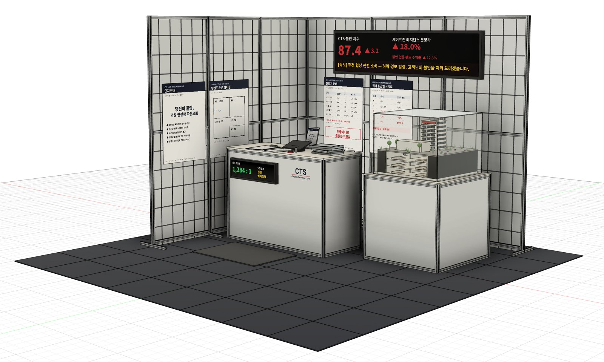
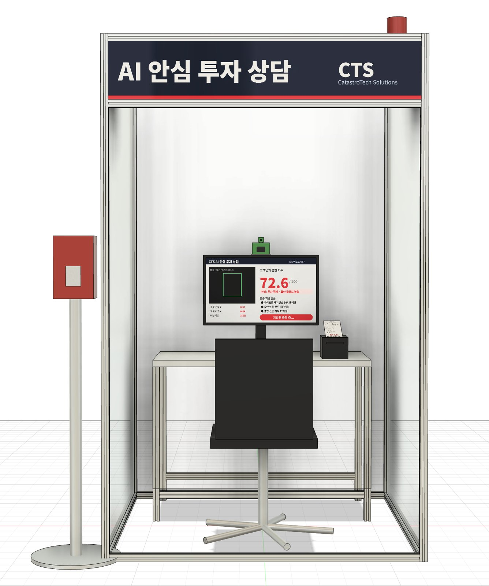
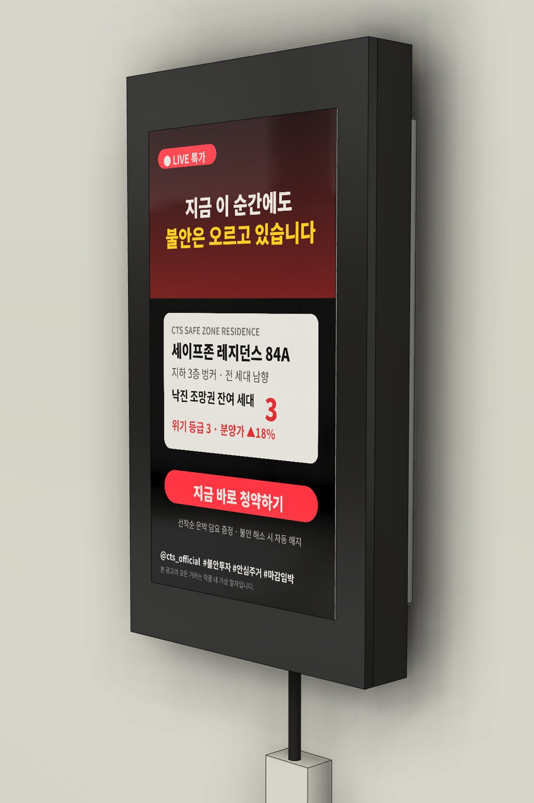

세상이 무너져도, 우리 집은 안전하게.
전쟁과 재난에 대비한 안심 주거. 지하 3층 벙커, 전 세대 남향. 위기 등급별 시세가 적용되어 국제 정세가 나빠질수록 가치가 오릅니다.
CTS의 다음 핵심기술.
2027년 공개 예정입니다.
Coming in 2027.
불안은 사라지지 않습니다. CTS는 불안을 가장 안정적인 자산으로 바꿉니다.
Anxiety never disappears. CTS turns it into your most stable asset.
세상이 무너져도, 우리 집은 안전하게.
전쟁과 재난에 대비한 안심 주거. 지하 3층 벙커, 전 세대 남향. 위기 등급별 시세가 적용되어 국제 정세가 나빠질수록 가치가 오릅니다.
세상이 흔들릴 때, 수익은 흔들리지 않습니다.
세계의 불안과 함께 수익률이 오릅니다. CTS 불안 지수에 연동됩니다.
내일의 불안, 오늘의 가치로.
미래의 불안을 지금 미리 현금화하세요.
당신보다 먼저, 당신의 불안을 알아봅니다.
상담원 없이 AI가 표정과 자세, 머뭇거림으로 고객님의 불안 수준을 판정하고 맞춤 상품을 처방해 드립니다.
신제품 소식은 CTS 공식 SNS의 CTS 불안 숏폼으로 가장 먼저 만나보세요.
* 본 상품은 세계 멸망 시 원금이 보장되지 않습니다. * 불안 해소 시 계약은 자동 해지됩니다. * 불안 수준이 기준에 미달하는 고객은 ‘투자 부적격: 안심 과다’로 분류될 수 있습니다.
* 본 모형은 개발 중인 이미지로, 실제 분양 내용과 다를 수 있습니다.



* 이미지는 개발 중인 화면으로, 실제 공개 내용과 다를 수 있습니다.